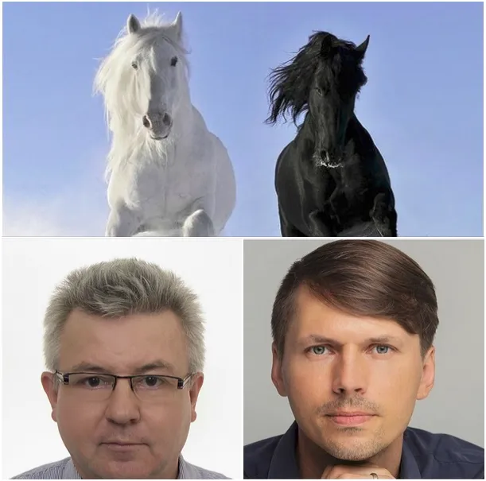

Z Grzegorzem Płaczkiem startujemy w tandemie.
Z Grzegorzem Płaczkiem startujemy w tandemie i chcemy, aby do Sejmu z Katowic weszło jak najwięcej osób. Czarny i Biały to sąsiednie pola na naszej polskiej szachownicy.
Pan Sebastian Pitoń jak zwykle ma radykalne rozwiązania. Link do filmu na końcu, najpierw się odniosę.
Mowa ludzi dojrzałych powinna być prosta i twarda. Propozycja, żeby nie głosować na Grzegorza Płaczka tylko na mnie, bo Grzegorz z "jedynki wejdzie na pewno " to iście góralska fantazja. Dzięki!

Statystycznie to prawda, ale "w realu" walczymy o jak najwięcej głosów na listę Konfederacji, bo wtedy wejdzie nas z regionu nie jeden, nie dwóch a trzech, a może i więcej. Lista mandatów w okręgu jest stała (12) i oznacza to, że gdy nas jest dużo to mniej jest PoPiSu! I o to chodzi. Startuję, aby w Sejmie było jak najmniej tych, co przez 30 lat psuli polskie prawo i zwyczaje. Dlatego jeśli chcesz głosować na Grzegorza Płaczka to głosuj na niego i przyprowadź na wybory kogoś, kto zagłosuje na mnie. Czas wywrócić ten stolik! Jest nas dość dużo, aby to zrobić.
Paweł Klimczewski
Nagranie Sebastiana Pitonia o moim starcie w wyborach. https://www.youtube.com/watch?v=6WnESLMJ9zI&t=1s
Paweł Klimczewski